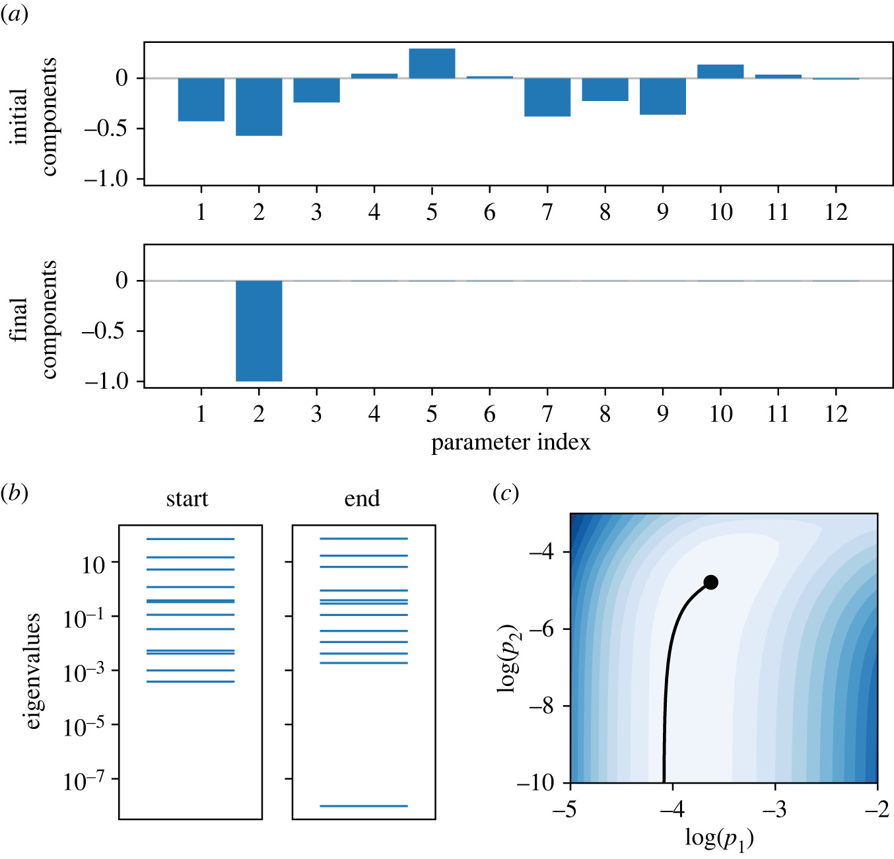
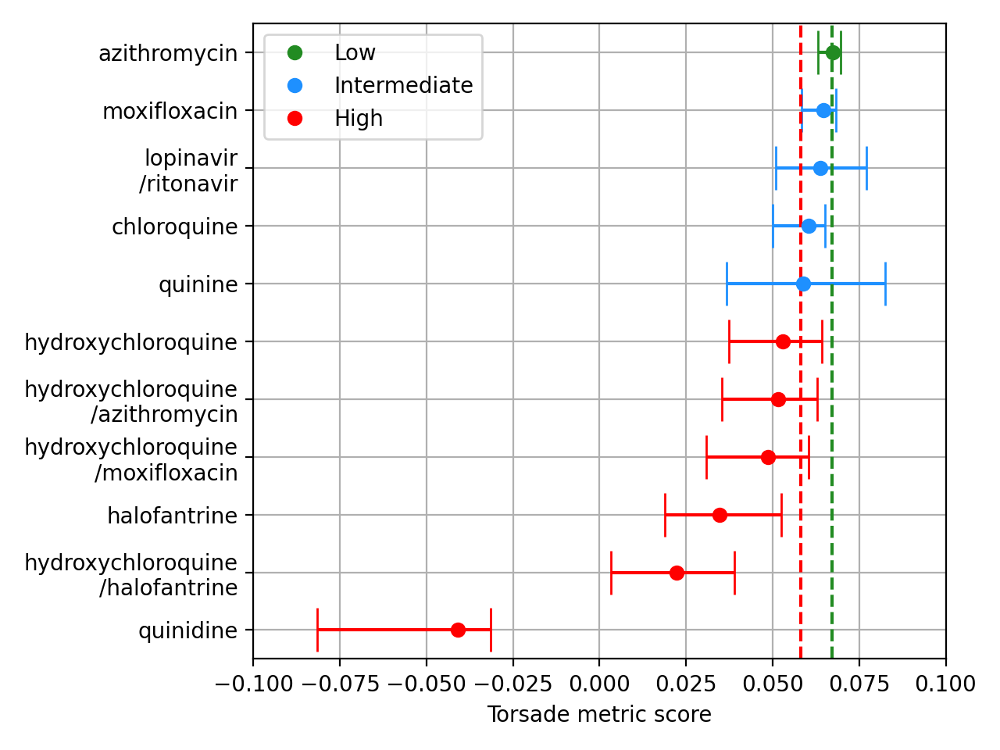
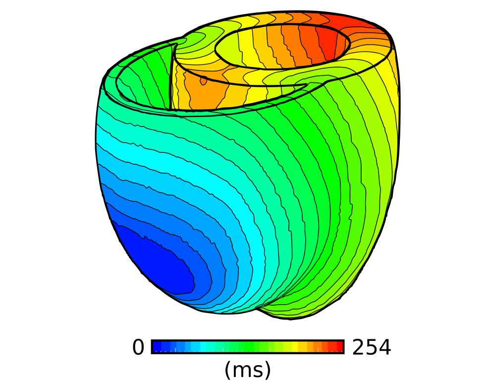
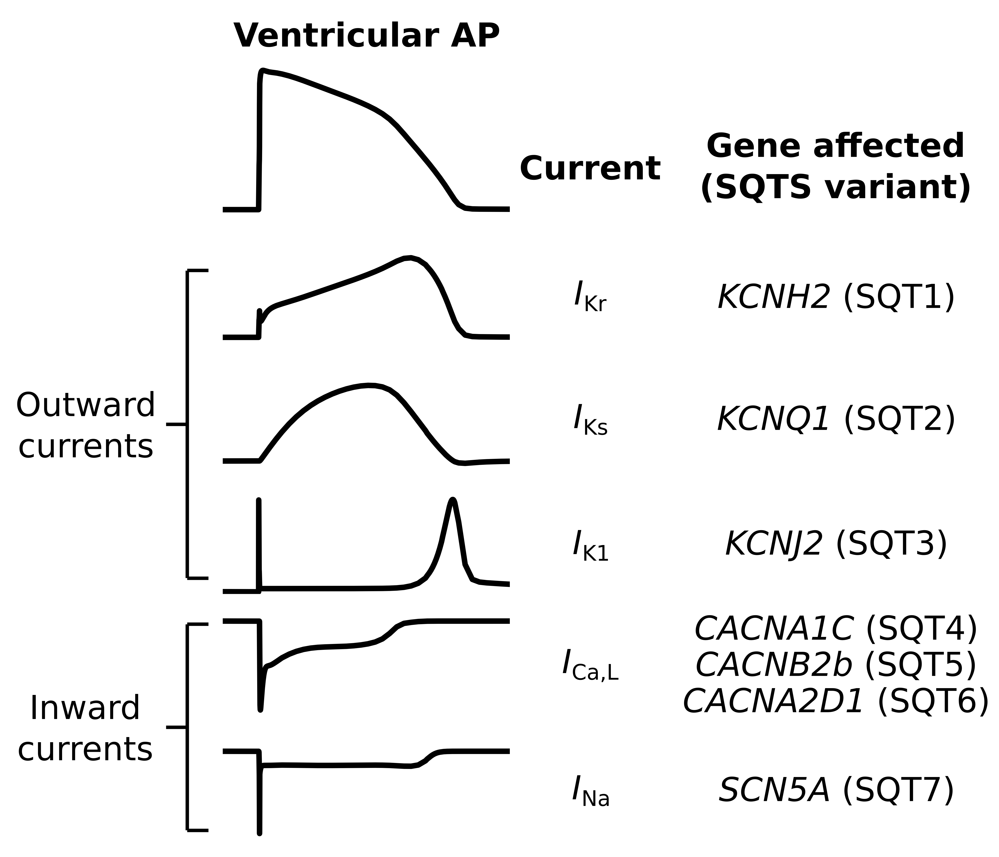

Model Calibration and Model Reduction
Calibrating the parameters used in mathematical models is a crucial step when developing a predictive model. This area of research focuses on how we can improve the model calibration process, and also how we can identify parameters with reduced uncertainty using model reduction approaches.
Related publications:
Whittaker, D. G., Wang, J., Shuttleworth, J. G., Venkateshappa, R., Kemp, J. M., Claydon, T. W., Mirams, G. R. (2022) J R Soc Interface, 20220193.
Whittaker, D. G.*, Clerx, M.*, Lei, C. L., Christini, D. J., Mirams, G. R. (2020) WIREs Syst Biol Med, e1482.

Safety Pharmacology and Modelling Drug-Ion Channel Interactions
Predictive in silico models based on multi-channel ion screening offer a promising approach to early drug safety assessment. This area of research focuses on developing and applying improved mathematical models of drug-ion channel interactions and associated tools for basic research and safety modelling.
Related publications:
Whittaker, D. G., Capel, R. A., Hendrix, M., Chan, X. H. S., Herring, N., White, N. J., Mirams, G. R., Burton, R. A. B. (2021) R Soc Open Sci, 8: 210235.
Whittaker, D. G., Ni, H., Benson, A. P., Hancox, J. C., Zhang, H. (2017) Front Physiol, 8, 759.

Organ-Scale Modelling of Cardiac Excitation-Propagation
Cardiac electrical excitation-propagation is influenced by structure from the cellular level to the whole-organ scale. Quantitatively understanding how myocardial structure affects electrical activity presents a significant challenge. This area of research uses idealised and image-based tissue-scale models of cardiac electrophysiology to investigate the 3D propagation of excitation waves in the heart.
Related publications:
Whittaker, D. G., Benson, A. P., Teh, I., Schneider, J. E., Colman, M. A. (2019) Biophys J, 117, 1–13.
Perez Alday, E. A., Whittaker, D. G., Benson, A. P., Colman, M. A. (2019) Front Physiol, 10, 308.

Modelling the Short QT Syndrome
The Short QT Syndrome (SQTS) is a rare but dangerous condition in which the QT interval on the ECG is shorter than usual; it is associated with risk of atrial and ventricular arrhythmias as well as sudden cardiac death. This area of research focuses on investigating arrhythmia substrates and genotype-phenotype relationships in the SQTS through the use of computational models.
Related publications:
Whittaker, D. G., Hancox, J. C., Zhang, H. (2019) Front Physiol, 9, 1888.
Hancox, J. C., Whittaker, D. G., Du, C., Stuart, A. G., Zhang, H. (2018) Expert Opin Ther Targets, 22(5), pp.439-451.